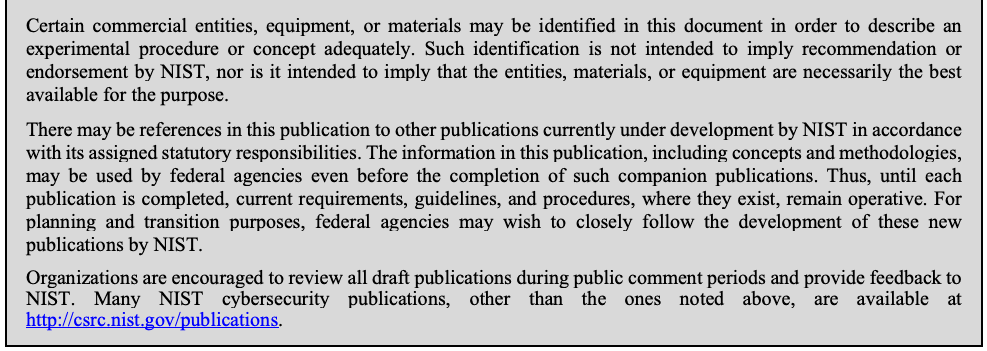
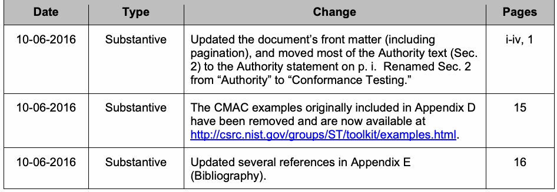
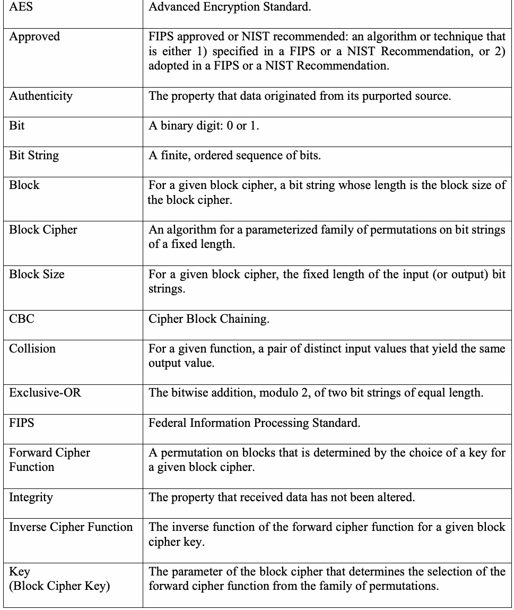
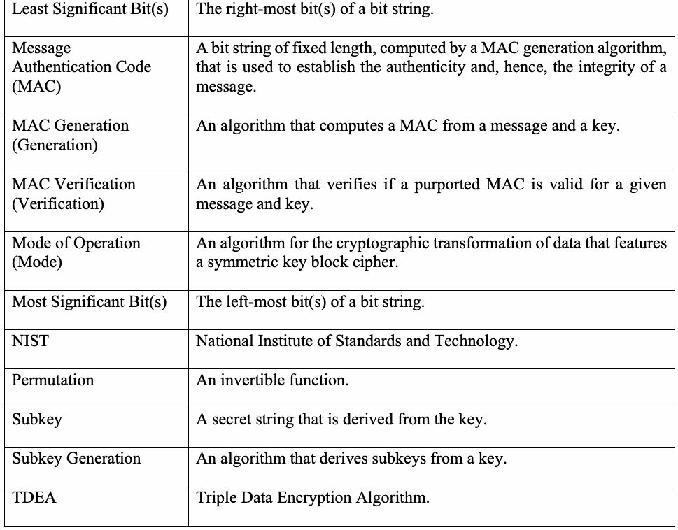
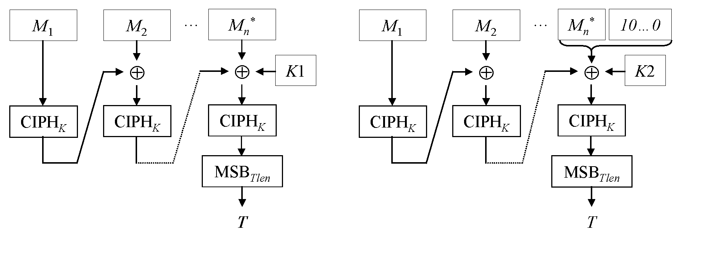

NIST Special Publication · PDF 原文抽出
Recommendation for Block Cipher Modes of Operation: the CMAC Mode for Authentication
認証のためのCMACモード
NIST SP 800-38B（Recommendation for Block Cipher Modes of Operation: the CMAC Mode for Authentication）の英文と日本語訳を段落ごとに並べた閲覧用ページです。ブロック暗号に基づくメッセージ認証コードCMACの定義、鍵導出、処理手順および試験例を示します。NISTは2025年に改訂を決定していますが、本訳は現行の2016年更新Final PDFに基づきます。 翻訳は非公式です。要件の確認にはNIST の正式版 PDFを参照してください。
PDF から抽出した原文は原本との照合待ちです。
NIST Special Publication 800-38B
NIST特別刊行物 800-38B
未レビュー訳Recommendation for Block Cipher
ブロック暗号のための推奨事項
未レビュー訳Modes of Operation:
運用モード：
未レビュー訳The CMAC Mode for Authentication
認証のためのCMACモード
未レビュー訳Morris Dworkin
Morris Dworkin
未レビュー訳This publication is available free of charge from: https://doi.org/10.6028/NIST.SP.800-38B
本刊行物は、次のURLから無料で入手できます：https://doi.org/10.6028/NIST.SP.800-38B
未レビュー訳C O M P U T E R S E C U R I T Y
コンピュータセキュリティ
未レビュー訳NIST Special Publication 800-38B
NIST特別刊行物 800-38B
未レビュー訳Recommendation for Block Cipher
ブロック暗号のための推奨事項
未レビュー訳Modes of Operation:
運用モード：
未レビュー訳The CMAC Mode for Authentication
認証のためのCMACモード
未レビュー訳Morris Dworkin
Morris Dworkin
未レビュー訳Computer Security Division Information Technology Laboratory
コンピュータセキュリティ部門 情報技術研究所
未レビュー訳This publication is available free of charge from: https://doi.org/10.6028/NIST.SP.800-38B
本刊行物は、次のURLから無料で入手できます：https://doi.org/10.6028/NIST.SP.800-38B
未レビュー訳May 2005
2005年5月
未レビュー訳INCLUDES UPDATES AS OF 10-06-2016: PAGE II
2016-10-06までの更新を含む：iiページ
未レビュー訳U.S. Department of Commerce Penny Pritzker, Secretary
米国商務省 Penny Pritzker、長官
未レビュー訳National Institute of Standards and Technology
国立標準技術研究所
未レビュー訳Willie May, Under Secretary of Commerce for Standards and Technology and Director
Willie May、標準技術担当商務次官兼所長
未レビュー訳Authority
権限
未レビュー訳This publication has been developed by NIST in accordance with its statutory responsibilities under the Federal Information Security Modernization Act (FISMA) of 2014, 44 U.S.C. § 3551 et seq., Public Law (P.L.) 113-283. NIST is responsible for developing information security standards and guidelines, including minimum requirements for federal information systems, but such standards and guidelines shall not apply to national security systems without the express approval of appropriate federal officials exercising policy authority over such systems. This guideline is consistent with the requirements of the Office of Management and Budget (OMB) Circular A-130.
本刊行物は、2014年連邦情報セキュリティ近代化法（FISMA）、44 U.S.C. § 3551 et seq.、公法（P.L.）113-283に基づく法定責任に従ってNISTが策定しました。NISTは、連邦情報システムの最小要件を含む情報セキュリティ標準およびガイドラインを策定する責任を負いますが、適切な連邦当局者が当該システムに対する政策権限を行使して明示的に承認しない限り、これらの標準およびガイドラインは国家安全保障システムには適用されてはなりません (shall not)。本ガイドラインは、行政管理予算局（OMB）通達A-130の要件に整合しています。
未レビュー訳Nothing in this publication should be taken to contradict the standards and guidelines made mandatory and binding on federal agencies by the Secretary of Commerce under statutory authority. Nor should these guidelines be interpreted as altering or superseding the existing authorities of the Secretary of Commerce, Director of the OMB, or any other federal official. This publication may be used by nongovernmental organizations on a voluntary basis and is not subject to copyright in the United States. Attribution would, however, be appreciated by NIST.
本刊行物のいかなる内容も、法定権限に基づき商務長官が連邦機関に義務付け、拘束力を持たせた標準およびガイドラインに反するものと解釈してはなりません (should)。また、これらのガイドラインは、商務長官、OMB長官、またはその他の連邦当局者の既存の権限を変更または置き換えるものと解釈してはなりません (should)。本刊行物は、政府機関以外の組織が任意で使用できます (may)。また、米国内では著作権の対象ではありません。ただし、NISTへの帰属表示をいただければ幸いです (would)。
未レビュー訳National Institute of Standards and Technology Special Publication 800-38B Natl. Inst. Stand. Technol. Spec. Publ. 800-38B, 21 pages (May 2005) CODEN: NSPUE2
国立標準技術研究所 特別刊行物 800-38B 国立標準技術研究所 特別刊行物 800-38B、第21ページ（2005年5月） CODEN: NSPUE2
未レビュー訳This publication is available free of charge from: https://doi.org/10.6028/NIST.SP.800-38B
本刊行物は、次のURLから無料で入手できます：https://doi.org/10.6028/NIST.SP.800-38B
未レビュー訳Certain commercial entities, equipment, or materials may be identified in this document in order to describe an experimental procedure or concept adequately. Such identification is not intended to imply recommendation or endorsement by NIST, nor is it intended to imply that the entities, materials, or equipment are necessarily the best available for the purpose. There may be references in this publication to other publications currently under development by NIST in accordance with its assigned statutory responsibilities. The information in this publication, including concepts and methodologies, may be used by federal agencies even before the completion of such companion publications. Thus, until each publication is completed, current requirements, guidelines, and procedures, where they exist, remain operative. For planning and transition purposes, federal agencies may wish to closely follow the development of these new publications by NIST. Organizations are encouraged to review all draft publications during public comment periods and provide feedback to NIST. Many NIST cybersecurity publications, other than the ones noted above, are available at http://csrc.nist.gov/publications.
原本PDFの抜粋画像

実験手順または概念を適切に説明するため、本書では特定の商業団体、機器、または材料を特定することがあります (may)。そのような特定は、NISTによる推奨または承認を意味するものではなく、また、当該団体、材料、または機器が目的に最も適した入手可能なものであることを意味するものでもありません。NISTは、割り当てられた法定責任に従って現在策定中の他の刊行物を、本刊行物内で参照することがあります (may)。本刊行物に含まれる情報（概念や方法論を含む）は、関連する刊行物が完成する前であっても連邦機関が使用できます (may)。したがって、各刊行物が完成するまでは、現行の要件、ガイドライン、および手順が存在する場合、それらは引き続き有効です。計画および移行のため、連邦機関はNISTによるこれらの新しい刊行物の策定を注意深く追跡することを希望する場合があります (may)。組織には、パブリックコメント期間中にすべての刊行物案を確認し、NISTにフィードバックを提供することが推奨されます。上記に記載したものを除く多くのNISTサイバーセキュリティ刊行物は、http://csrc.nist.gov/publications. で入手できます。
未レビュー訳Comments on this publication may be submitted to: National Institute of Standards and Technology Attn: Computer Security Division, Information Technology Laboratory 100 Bureau Drive (Mail Stop 8930) Gaithersburg, MD 20899-8930 Email: encryptionmodes@nist.gov
本刊行物に関するコメントは、次の宛先に提出できます (may)：国立標準技術研究所 宛先：コンピュータセキュリティ部門、情報技術研究所 100 Bureau Drive（Mail Stop 8930）Gaithersburg, MD 20899-8930 電子メール：encryptionmodes@nist.gov
未レビュー訳All comments are subject to release under the Freedom of Information Act (FOIA).
すべてのコメントは、情報公開法（FOIA）に基づく公開の対象となります。
未レビュー訳Reports on Computer Systems Technology
コンピュータシステム技術に関する報告書
未レビュー訳The Information Technology Laboratory (ITL) at the National Institute of Standards and Technology (NIST) promotes the U.S. economy and public welfare by providing technical leadership for the Nation’s measurement and standards infrastructure. ITL develops tests, test methods, reference data, proof of concept implementations, and technical analyses to advance the development and productive use of information technology. ITL’s responsibilities include the development of management, administrative, technical, and physical standards and guidelines for the cost-effective security and privacy of other than national security-related information in federal information systems. The Special Publication 800-series reports on ITL’s research, guidelines, and outreach efforts in information system security, and its collaborative activities with industry, government, and academic organizations.
国立標準技術研究所（NIST）の情報技術研究所（ITL）は、国家の計測および標準インフラに技術的リーダーシップを提供し、米国経済と公共の福祉を促進しています。ITLは、情報技術の発展と生産的な利用を推進するため、試験、試験方法、参照データ、概念実証実装、および技術分析を開発しています。ITLの責任には、連邦情報システムにおける国家安全保障関連以外の情報の費用対効果に優れたセキュリティおよびプライバシーのための管理、運用、技術、および物理的な標準とガイドラインの策定が含まれます。特別刊行物800シリーズは、情報システムセキュリティに関するITLの研究、ガイドライン、普及活動、および産業界、政府、学術機関との協力活動を報告しています。
未レビュー訳Abstract
概要
未レビュー訳This Recommendation specifies a message authentication code (MAC) algorithm based on a symmetric key block cipher. This block cipher-based MAC algorithm, called CMAC, may be used to provide assurance of the authenticity and, hence, the integrity of binary data.
本推奨事項は、対称鍵ブロック暗号に基づくメッセージ認証コード（MAC）アルゴリズムを規定します。CMACと呼ばれるこのブロック暗号ベースのMACアルゴリズムは、バイナリデータの真正性、ひいては完全性を保証するために使用できます (may)。
未レビュー訳Keywords
キーワード
未レビュー訳authentication; block cipher; cryptography; information security; integrity; message authentication code; mode of operation
認証；ブロック暗号；暗号技術；情報セキュリティ；完全性；メッセージ認証コード；運用モード
未レビュー訳Errata
正誤表
未レビュー訳The following changes have been incorporated into Special Publication 800-38B. Errata updates include corrections, clarifications, or other minor changes in the publication that are either editorial or substantive in nature.
以下の変更が特別刊行物800-38Bに反映されています。正誤表の更新には、刊行物に対する訂正、明確化、またはその他の軽微な変更が含まれ、編集上または実質上の変更のいずれかです。
未レビュー訳| Date | Type | Change | Pages |
| 10-06-2016 | Substantive | Updated the document’s front matter (including pagination), and moved most of the Authority text (Sec. 2) to the Authority statement on p. i. Renamed Sec. 2 from “Authority” to “Conformance Testing.” | i-iv, 1 |
| 10-06-2016 | Substantive | The CMAC examples originally included in Appendix D have been removed and are now available at http://csrc.nist.gov/groups/ST/toolkit/examples.html. | 15 |
| 10-06-2016 | Substantive | Updated several references in Appendix E (Bibliography). | 16 |
原本PDFの抜粋画像

| 日付 | 種類 | 変更内容 | ページ |
| 10-06-2016 | 実質的 | 文書の前付（ページ番号を含む）を更新し、「権限」本文（第2節）の大部分を1ページの権限声明に移動した。第2節の名称を「権限」から「適合性試験」に変更した。 | i-iv, 1 |
| 10-06-2016 | 実質的 | 当初付録Dに含まれていたCMACの例を削除し、現在は http://csrc.nist.gov/groups/ST/toolkit/examples.html. で提供している。 | 15 |
| 10-06-2016 | 実質的 | 付録E（参考文献）の複数の参照を更新した。 | 16 |
Table of Contents
目次
未レビュー訳1 PURPOSE — 1
1 目的 — 1
未レビュー訳2 CONFORMANCE TESTING — 1
2 適合性試験 — 1
未レビュー訳3 INTRODUCTION — 1
3 はじめに — 1
未レビュー訳4 DEFINITIONS, ABBREVIATIONS, AND SYMBOLS — 2
4 定義、略語、および記号 — 2
未レビュー訳4.1 DEFINITIONS AND ABBREVIATIONS — 2
4.1 定義および略語 — 2
未レビュー訳4.2 SYMBOLS — 3
4.2 記号 — 3
未レビュー訳4.2.1 Variables — 3
4.2.1 変数 — 3
未レビュー訳4.2.2 Operations and Functions — 4
4.2.2 演算および関数 — 4
未レビュー訳5 PRELIMINARIES — 4
5 予備事項 — 4
未レビュー訳5.1 EXAMPLES OF OPERATIONS AND FUNCTIONS — 5
5.1 演算および関数の例 — 5
未レビュー訳5.2 BLOCK CIPHER — 5
5.2 ブロック暗号 — 5
未レビュー訳5.3 SUBKEYS — 6
5.3 サブキー — 6
未レビュー訳5.4 MAC GENERATION AND VERIFICATION — 6
5.4 MACの生成および検証 — 6
未レビュー訳5.5 INPUT AND OUTPUT DATA — 6
5.5 入力および出力データ — 6
未レビュー訳6 CMAC SPECIFICATION — 6
6 CMAC仕様 — 6
未レビュー訳6.1 SUBKEY GENERATION — 7
6.1 サブキー生成 — 7
未レビュー訳6.2 MAC GENERATION — 7
6.2 MAC生成 — 7
未レビュー訳6.3 MAC VERIFICATION — 9
6.3 MAC検証 — 9
未レビュー訳APPENDIX A: LENGTH OF THE MAC — 11
付録A：MACの長さ — 11
未レビュー訳A.1 ASSURANCE AGAINST GUESSING ATTACKS — 11
A.1 推測攻撃に対する保証 — 11
未レビュー訳A.2 SELECTION OF THE MAC LENGTH — 11
A.2 MAC長の選択 — 11
未レビュー訳APPENDIX B: MESSAGE SPAN OF THE KEY — 13
付録B：鍵のメッセージ範囲 — 13
未レビュー訳APPENDIX C: PROTECTION AGAINST REPLAY OF MESSAGES — 14
付録C：メッセージの再送に対する保護 — 14
未レビュー訳APPENDIX D: EXAMPLES — 15
付録D：例 — 15
未レビュー訳APPENDIX E: BIBLIOGRAPHY — 16
付録E：参考文献 — 16
未レビュー訳Figures
図
未レビュー訳Figure 1: Illustration of the two cases of MAC Generation — 9
図1：MAC生成の2つの場合の図解 — 9
未レビュー訳1 Purpose
1 目的
未レビュー訳This publication is the second Part in a series of Recommendations regarding modes of operation of symmetric key block ciphers.
本刊行物は、対称鍵ブロック暗号の運用モードに関する一連の推奨事項の第2部です。
未レビュー訳2 Conformance Testing
2 適合性試験
未レビュー訳Conformance testing for implementations of the mode of operation that is specified in this Part of the Recommendation will be conducted within the framework of the Cryptographic Module Validation Program (CMVP), a joint effort of NIST and the Communications Security Establishment of the Government of Canada. An implementation of a mode of operation must adhere to the requirements in this Recommendation in order to be validated under the CMVP. The requirements of this Recommendation are indicated by the word “shall.”
本推奨事項の本編で規定する運用モードの実装に対する適合性試験は、NISTとカナダ政府通信保安局による共同プログラムである暗号モジュール検証プログラム（CMVP）の枠組みの中で実施されます (will)。CMVPに基づく検証を受けるには、運用モードの実装は本推奨事項の要件に従わなければなりません (must)。本推奨事項の要件は、“shall”という語で示されます。
未レビュー訳3 Introduction
3 はじめに
未レビュー訳This Recommendation specifies a message authentication code (MAC) algorithm that is based on a symmetric key block cipher. This cipher-based MAC is abbreviated CMAC, analogous to the abbreviation for the hash function-based MAC, HMAC, that is standardized in FIPS Pub. 198 [4]. CMAC may be appropriate for information systems in which an approved block cipher is more readily available than an approved hash function.
本推奨事項は、対称鍵ブロック暗号に基づくメッセージ認証コード（MAC）アルゴリズムを規定します。この暗号ベースのMACはCMACと略され、FIPS Pub. 198 [4]で標準化されたハッシュ関数ベースのMACの略称HMACに対応しています。承認済みのハッシュ関数よりも承認済みのブロック暗号を容易に利用できる情報システムでは、CMACが適切な場合があります (may)。
未レビュー訳The basic Cipher Block Chaining MAC algorithm (CBC-MAC) has security deficiencies [9]. The core of the CMAC algorithm is a variation of CBC-MAC that Black and Rogaway proposed and analyzed under the name XCBC in Ref. [2] and submitted to NIST in Ref. [1]. The XCBC algorithm efficiently addresses the security deficiencies of CBC-MAC. Iwata and Kurosawa proposed an improvement of XCBC and named the resulting algorithm One-Key CBC-MAC (OMAC) in Ref. [6] and in Ref. [5], their initial submission to NIST; they later submitted OMAC1 [7], a refinement of OMAC, and additional security analysis [8]. The OMAC1 variation efficiently reduces the key size of XCBC. CMAC is equivalent to OMAC1.
基本的なCipher Block Chaining MACアルゴリズム（CBC-MAC）にはセキュリティ上の欠陥があります [9]。CMACアルゴリズムの中核はCBC-MACの変形であり、BlackとRogawayが文献[2]で提案・分析し、文献[1]でNISTに提出したもので、XCBCという名称です。XCBCアルゴリズムはCBC-MACのセキュリティ上の欠陥に効率的に対処します。IwataとKurosawaはXCBCを改良し、文献[6]およびNISTへの最初の提出文献[5]において、そのアルゴリズムをOne-Key CBC-MAC（OMAC）と命名しました。その後、OMACの改良版であるOMAC1 [7]と、追加のセキュリティ分析[8]を提出しました。OMAC1の変形はXCBCの鍵サイズを効率的に縮小します。CMACはOMAC1と等価です。
未レビュー訳Because CMAC is based on an approved symmetric key block cipher, such as the Advanced Encryption Standard (AES) algorithm that is specified in Federal Information Processing Standard (FIPS) Pub. 197 [3], CMAC can be considered a mode of operation of the block cipher. CMAC is also an approved mode of the Triple Data Encryption Algorithm (TDEA) [10]; however, as discussed in Appendix B, the recommended default message span for TDEA is much more restrictive than for the AES algorithm, due to the smaller block size of TDEA.
CMACは、連邦情報処理標準（FIPS）Pub. 197 [3]で規定されるAdvanced Encryption Standard（AES）アルゴリズムなどの承認済み対称鍵ブロック暗号に基づくため、ブロック暗号の運用モードとみなすことができます (can)。CMACはTriple Data Encryption Algorithm（TDEA）[10]の承認済み運用モードでもあります。ただし、付録Bで説明するように、TDEAのブロックサイズはAESアルゴリズムより小さいため、TDEAに推奨される既定のメッセージ範囲はAESの場合よりもはるかに制限されています。
未レビュー訳CMAC, like any well-designed MAC algorithm, provides stronger assurance of data integrity than a checksum or an error detecting code. The verification of a checksum or an error detecting code is designed to detect only accidental modifications of the data, while CMAC is designed to detect intentional, unauthorized modifications of the data, as well as accidental modifications.
適切に設計された他のMACアルゴリズムと同様に、CMACはチェックサムまたは誤り検出符号よりも強いデータ完全性の保証を提供します。チェックサムまたは誤り検出符号の検証は、データへの偶発的な変更のみを検出するよう設計されています。一方、CMACは、偶発的な変更に加え、意図的かつ許可されていないデータ変更を検出するよう設計されています。
未レビュー訳4 Definitions, Abbreviations, and Symbols
4 定義、略語、および記号
未レビュー訳4.1 Definitions and Abbreviations
4.1 定義および略語
未レビュー訳| AES | Advanced Encryption Standard. |
| Approved | FIPS approved or NIST recommended: an algorithm or technique that is either 1) specified in a FIPS or a NIST Recommendation, or 2) adopted in a FIPS or a NIST Recommendation. |
| Authenticity | The property that data originated from its purported source. |
| Bit | A binary digit: 0 or 1. |
| Bit String | A finite, ordered sequence of bits. |
| Block | For a given block cipher, a bit string whose length is the block size of the block cipher. |
| Block Cipher | An algorithm for a parameterized family of permutations on bit strings of a fixed length. |
| Block Size | For a given block cipher, the fixed length of the input (or output) bit strings. |
| CBC | Cipher Block Chaining. |
| Collision | For a given function, a pair of distinct input values that yield the same output value. |
| Exclusive-OR | The bitwise addition, modulo 2, of two bit strings of equal length. |
| FIPS | Federal Information Processing Standard. |
| Forward Cipher Function | A permutation on blocks that is determined by the choice of a key for a given block cipher. |
| Integrity | The property that received data has not been altered. |
| Inverse Cipher Function | The inverse function of the forward cipher function for a given block cipher key. |
| Key (Block Cipher Key) | The parameter of the block cipher that determines the selection of the forward cipher function from the family of permutations. |
原本PDFの抜粋画像

| AES | Advanced Encryption Standard。 |
| 承認済み (Approved) | FIPSにより承認された、またはNISTにより推奨されたもの。すなわち、1) FIPSまたはNIST推奨事項で規定されている、または2) FIPSまたはNIST推奨事項に採用されているアルゴリズムまたは技法。 |
| 真正性 (Authenticity) | データが、そのデータの発信元とされる情報源から生成されたという性質。 |
| ビット (Bit) | 2進数字：0または1。 |
| ビット列 (Bit String) | 有限かつ順序付けられたビットの列。 |
| ブロック (Block) | 特定のブロック暗号において、その長さがブロック暗号のブロックサイズであるビット列。 |
| ブロック暗号 (Block Cipher) | 固定長のビット列に対する置換族をパラメータ化したアルゴリズム。 |
| ブロックサイズ (Block Size) | 特定のブロック暗号において、入力（または出力）ビット列の固定長。 |
| CBC | Cipher Block Chaining（暗号ブロック連鎖）。 |
| 衝突 (Collision) | 特定の関数において、同一の出力値を生じる、相異なる2つの入力値の組。 |
| 排他的論理和 (Exclusive-OR) | 同じ長さの2つのビット列をビット単位で加算し、法2で演算すること。 |
| FIPS | Federal Information Processing Standard（連邦情報処理標準）。 |
| 順方向暗号関数 (Forward Cipher Function) | 特定のブロック暗号について、鍵の選択によって決まるブロック上の置換。 |
| 完全性 (Integrity) | 受信したデータが変更されていないという性質。 |
| 逆方向暗号関数 (Inverse Cipher Function) | 特定のブロック暗号鍵に対する順方向暗号関数の逆関数。 |
| 鍵（ブロック暗号鍵） (Key (Block Cipher Key)) | 置換族から順方向暗号関数を選択するブロック暗号のパラメータ。 |
| Least Significant Bit(s) | The right-most bit(s) of a bit string. |
| Message Authentication Code (MAC) | A bit string of fixed length, computed by a MAC generation algorithm, that is used to establish the authenticity and, hence, the integrity of a message. |
| MAC Generation (Generation) | An algorithm that computes a MAC from a message and a key. |
| MAC Verification (Verification) | An algorithm that verifies if a purported MAC is valid for a given message and key. |
| Mode of Operation (Mode) | An algorithm for the cryptographic transformation of data that features a symmetric key block cipher. |
| Most Significant Bit(s) | The left-most bit(s) of a bit string. |
| NIST | National Institute of Standards and Technology. |
| Permutation | An invertible function. |
| Subkey | A secret string that is derived from the key. |
| Subkey Generation | An algorithm that derives subkeys from a key. |
| TDEA | Triple Data Encryption Algorithm. |
原本PDFの抜粋画像

| 最下位ビット（複数可） (Least Significant Bit(s)) | ビット列の最も右側のビット（複数可）。 |
| メッセージ認証コード（MAC） (Message Authentication Code (MAC)) | MAC生成アルゴリズムによって計算され、メッセージの真正性、ひいては完全性を確立するために使用される固定長のビット列。 |
| MAC生成（生成） (MAC Generation (Generation)) | メッセージと鍵からMACを計算するアルゴリズム。 |
| MAC検証（検証） (MAC Verification (Verification)) | 提示されたMACが、所与のメッセージおよび鍵に対して有効かどうかを検証するアルゴリズム。 |
| 運用モード（モード） (Mode of Operation (Mode)) | 対称鍵ブロック暗号を使用するデータの暗号変換アルゴリズム。 |
| 最上位ビット（複数可） (Most Significant Bit(s)) | ビット列の最も左側のビット（複数可）。 |
| NIST | National Institute of Standards and Technology（国立標準技術研究所）。 |
| 置換 (Permutation) | 可逆関数。 |
| サブキー (Subkey) | 鍵から導出された秘密の列。 |
| サブキー生成 (Subkey Generation) | 鍵からサブキーを導出するアルゴリズム。 |
| TDEA | Triple Data Encryption Algorithm（三重データ暗号化アルゴリズム）。 |
4.2 Symbols
4.2 記号
未レビュー訳4.2.1 Variables
4.2.1 変数
未レビュー訳b — The bit length of a block.
b — ブロックのビット長。
未レビュー訳Rb — The constant string for subkey generation for a cipher with block size b.
Rb — ブロックサイズが b である暗号のサブキー生成に用いる定数列。
未レビュー訳K — The block cipher key.
K — ブロック暗号鍵。
未レビュー訳K1 — The first subkey.
K1 — 第1サブキー。
未レビュー訳K2 — The second subkey.
K2 — 第2サブキー。
未レビュー訳Key1 — The first component of a TDEA key.
Key1 — TDEA鍵の第1構成要素。
未レビュー訳Key2 — The second component of a TDEA key.
Key2 — TDEA鍵の第2構成要素。
未レビュー訳Key3 — The third component of a TDEA key.
Key3 — TDEA鍵の第3構成要素。
未レビュー訳M — The message.
M — メッセージ。
未レビュー訳Mi — The ith block of the formatted message.
Mi — フォーマット済みメッセージの i 番目のブロック。
未レビュー訳Mn* — The final block, possibly a partial block, of the formatted message.
Mn* — フォーマット済みメッセージの最後のブロック。部分ブロックの場合もある。
未レビュー訳Mlen — The bit length of the message.
Mlen — メッセージのビット長。
未レビュー訳n — The number of blocks in the formatted message.
n — フォーマット済みメッセージのブロック数。
未レビュー訳T — The MAC.
T — MAC。
未レビュー訳Tlen — The bit length of the MAC.
Tlen — MACのビット長。
未レビュー訳4.2.2 Operations and Functions
4.2.2 演算および関数
未レビュー訳⌈x⌉ — The least integer that is not less than the real number x.
⌈x⌉ — 実数 x 以上である最小の整数。
未レビュー訳X || Y — The concatenation of two bit strings X and Y.
X || Y — 2つのビット列 X および Y の連結。
未レビュー訳X ⊕ Y — The bitwise exclusive-OR of two bit strings X and Y of the same length.
X ⊕ Y — 同じ長さの2つのビット列 X および Y のビット単位の排他的論理和。
未レビュー訳CIPHK(X) — The output of the forward cipher function of the block cipher under the key K applied to the block X.
CIPHK(X) — 鍵 K のブロック暗号の順方向暗号関数をブロック X に適用した出力。
未レビュー訳LSBs(X) — The bit string consisting of the s right-most bits of the bit string X.
LSBs(X) — ビット列 X の右端 s ビットからなるビット列。
未レビュー訳MSBs(X) — The bit string consisting of the s left-most bits of the bit string X.
MSBs(X) — ビット列 X の左端 s ビットからなるビット列。
未レビュー訳X << 1 — The bit string that results from discarding the leftmost bit of the bit string X and appending a ‘0’ bit on the right.
X << 1 — ビット列 X の左端のビットを破棄し、右端に「0」ビットを付加して得られるビット列。
未レビュー訳lg(x) — The base 2 logarithm of the positive real number x.
lg(x) — 正の実数 x の底2の対数。
未レビュー訳0s — The bit string that consists of s ‘0’ bits.
0s — s 個の「0」ビットからなるビット列。
未レビュー訳5 Preliminaries
5 予備事項
未レビュー訳The elements of CMAC and the associated notation are introduced in the five sections below. Examples of operations and functions are given in Sec. 5.1. The underlying block cipher and key are discussed in Sec. 5.2. The two subkeys that are derived from the key are discussed in Sec. 5.3. MAC generation and verification are discussed in Sec. 5.4. The input and output data for MAC generation are discussed in Sec. 5.5.
CMACの構成要素と関連する表記法を、以下の5つの節で紹介します。演算および関数の例は、Section 5.1に示します。基礎となるブロック暗号と鍵については、Section 5.2で説明します。鍵から導出される2つのサブキーについては、Section 5.3で説明します。MACの生成と検証については、Section 5.4で説明します。MAC生成の入力データと出力データについては、Section 5.5で説明します。
未レビュー訳5.1 Examples of Operations and Functions
5.1 演算および関数の例
未レビュー訳Given a positive integer s, 0s denotes the string that consists of s ‘0’ bits. For example, 08 = 00000000.
正の整数 s が与えられたとき、0s は s 個の「0」ビットからなる列を表します。例えば、08 = 00000000 です。
未レビュー訳Given a real number x, the ceiling function, denoted ⌈x⌉, is the least integer that is not less than x. For example, ⌈2.1⌉ = 3, and ⌈4⌉ = 4.
実数 x が与えられたとき、天井関数は ⌈x⌉ と表記し、x 以上である最小の整数です。例えば、⌈2.1⌉ = 3、⌈4⌉ = 4 です。
未レビュー訳The concatenation operation on bit strings is denoted ||; for example, 001 || 10111 = 00110111.
ビット列の連結演算は || と表記します。例えば、001 || 10111 = 00110111 です。
未レビュー訳Given bit strings of equal length, the exclusive-OR operation, denoted ⊕, specifies the addition, modulo 2, of the bits in each bit position, i.e., without carries. For example, 10011 ⊕ 10101 = 00110.
同じ長さのビット列が与えられたとき、排他的論理和演算は ⊕ と表記し、各ビット位置のビットを法2で加算すること、すなわち桁上がりなしの加算を表します。例えば、10011 ⊕ 10101 = 00110 です。
未レビュー訳Given a bit string X, the functions LSBs(X) and MSBs(X) return the s least significant (i.e., right-most) bits and the s most significant (i.e., left-most) bits, respectively, of X. For example, LSB3(111011010) = 010, and MSB4(111011010) = 1110.
ビット列 X が与えられたとき、関数 LSBs(X) および MSBs(X) は、それぞれ X の最下位（右端）s ビットと最上位（左端）s ビットを返します。例えば、LSB3(111011010) = 010、MSB4(111011010) = 1110 です。
未レビュー訳Given a bit string X that consists of Xlen bits, the (single) left-shift function, denoted X << 1, is LSBXlen(X || 0). For example, 1101110 << 1 = 1011100.
ビット列 X が Xlen ビットからなるとき、（単一の）左シフト関数は X << 1 と表記し、LSBXlen(X || 0) です。例えば、1101110 << 1 = 1011100 です。
未レビュー訳Given a positive real number x, its base 2 logarithm is denoted lg(x). For example, lg(210) = 10.
正の実数 x の底2の対数は lg(x) と表記します。例えば、lg(210) = 10 です。
未レビュー訳5.2 Block Cipher
5.2 ブロック暗号
未レビュー訳The CMAC algorithm depends on the choice of an underlying symmetric key block cipher. The CMAC algorithm is thus a mode of operation (a mode, for short) of the block cipher. The CMAC key is the block cipher key (the key, for short).
CMACアルゴリズムは、基礎となる対称鍵ブロック暗号の選択に依存します。したがって、CMACアルゴリズムはブロック暗号の運用モード（略して「モード」）です。CMAC鍵はブロック暗号鍵（略して「鍵」）です。
未レビュー訳For any given key, the underlying block cipher of the mode consists of two functions that are inverses of each other. The choice of the block cipher includes the designation of one of the two functions of the block cipher as the forward function/transformation, and the other as the inverse function, as in the specifications of the AES algorithm and TDEA in Ref. [3] and Ref. [10], respectively. The CMAC mode does not employ the inverse function.
任意の所与の鍵について、このモードの基礎となるブロック暗号は、互いに逆関数である2つの関数から成ります。ブロック暗号の選択には、AESアルゴリズムおよびTDEAの仕様（それぞれ文献[3]および[10]）と同様に、ブロック暗号の2つの関数の一方を順方向関数／変換として、もう一方を逆関数として指定することが含まれます。CMACモードは逆関数を使用しません。
未レビュー訳The forward cipher function is a permutation on bit strings of a fixed length; the strings are called blocks. The bit length of a block is denoted b, and the length of a block is called the block size. For the AES algorithm, b = 128; for TDEA, b = 64. The key is denoted K, and the resulting forward cipher function of the block cipher is denoted CIPHK.
順方向暗号関数は、固定長のビット列に対する置換です。このビット列をブロックと呼びます。ブロックのビット長を b と表記し、ブロックの長さをブロックサイズと呼びます。AESアルゴリズムでは b = 128、TDEAでは b = 64 です。鍵は K と表記し、ブロック暗号の順方向暗号関数を CIPHK と表記します。
未レビュー訳The underlying block cipher shall be approved, and the key shall be generated uniformly at random, or close to uniformly at random, i.e., so that each possible key is (nearly) equally likely to be generated. The key shall be secret and shall be used exclusively for the CMAC mode of the chosen block cipher. The message span of the key is discussed in Appendix B. To fulfill the requirements on the key, the key should be established among the parties to the information within an approved key management structure; the details of the establishment and management of keys are outside the scope of this Recommendation.
基礎となるブロック暗号は承認済みでなければならず (shall)、鍵は一様ランダム、または一様ランダムに近い方法で生成しなければなりません (shall)。すなわち、生成される各鍵の可能性が（ほぼ）等しくなければなりません。鍵は秘密でなければならず (shall)、選択したブロック暗号のCMACモード専用に使用しなければなりません (shall)。鍵のメッセージ範囲については付録Bで説明します。鍵に関する要件を満たすため、鍵は承認済みの鍵管理構造内で情報を共有する当事者間に確立することが望ましいです (should)。鍵の確立および管理の詳細は、本推奨事項の対象範囲外です。
未レビュー訳5.3 Subkeys
5.3 サブキー
未レビュー訳The block cipher key is used to derive two additional secret values, called the subkeys, denoted K1 and K2. The length of each subkey is the block size. The subkeys are fixed for any invocation of CMAC with the given key. Consequently, the subkeys may be precomputed and stored with the key for repeated use; alternatively, the subkeys may be computed anew for each invocation.
ブロック暗号鍵を用いて、サブキーと呼ばれる2つの追加の秘密値 K1 および K2 を導出します。各サブキーの長さはブロックサイズです。所与の鍵を用いるCMACの各実行では、サブキーは固定です。そのため、サブキーは事前計算して鍵とともに保存し、繰り返し使用できます (may)。または、実行ごとに新たに計算できます (may)。
未レビュー訳Any intermediate value in the computation of the subkey, in particular, CIPHK(0b), shall also be secret. This requirement precludes the system in which CMAC is implemented from using this intermediate value publicly for some other purpose, for example, as an unpredictable value or as an integrity check value on the key.
サブキー計算における中間値、特に CIPHK(0b) も秘密にしなければなりません (shall)。この要件により、CMACの実装システムは、この中間値を予測不能値や鍵の完全性検査値など、他の目的で公開利用できません。
未レビュー訳One of the elements of the subkey generation process is a bit string, denoted Rb, that is completely determined by the number of bits in a block. In particular, for the two block sizes of the currently approved block ciphers, R128 = 012010000111, and R64 = 05911011.
サブキー生成プロセスの要素の1つは、ビット列 Rb であり、これはブロック内のビット数によって完全に定まります。特に、現在承認されているブロック暗号の2つのブロックサイズについて、R128 = 012010000111、R64 = 05911011 です。
未レビュー訳In general, Rb is a representation of a certain irreducible binary polynomial of degree b, namely, the lexicographically first among all such polynomials with the minimum possible number of nonzero terms. If this polynomial is expressed as ub + cb−1ub−1 + … + c2u2 + c1u + c0, where the coefficients cb−1, cb−2, …, c2, c1, c0 are either 0 or 1, then Rb is the bit string cb−1cb−2…c2c1c0.
一般に、Rb は次数 b の既約2進多項式の表現です。すなわち、可能な非零項の数が最小である多項式のうち、辞書順で最初のものです。この多項式を ub + cb−1ub−1 + … + c2u2 + c1u + c0 と表し、係数 cb−1、cb−2、…、c2、c1、c0 がいずれも0または1であるとすると、Rb はビット列 cb−1cb−2…c2c1c0 です。
未レビュー訳5.4 MAC Generation and Verification
5.4 MACの生成および検証
未レビュー訳As for any MAC algorithm, an authorized party applies the MAC generation process to the data to be authenticated to produce a MAC for the data. Subsequently, any authorized party can apply the verification process to the received data and the received MAC. Successful verification provides assurance of data authenticity, as discussed in Appendix A, and, hence, of integrity.
他のMACアルゴリズムと同様に、権限を持つ当事者は、認証対象のデータにMAC生成プロセスを適用し、そのデータのMACを生成します。その後、権限を持つ任意の当事者は、受信データと受信したMACに検証プロセスを適用できます (can)。検証に成功すると、付録Aで説明するように、データの真正性、ひいては完全性が保証されます。
未レビュー訳5.5 Input and Output Data
5.5 入力および出力データ
未レビュー訳For a given block cipher and key, the input to the MAC generation function is a bit string called the message, denoted M. The bit length of M is denoted Mlen. The value of Mlen is not an essential input for the MAC generation algorithm if the implementation has some other means of identifying the last block in the partition of the message, as discussed in Sec. 6.2. Thus, in such a case, the computation of the MAC may begin “on-line” before the entire message is available. In principle, there is no restriction on the lengths of messages. In practice, however, the system in which CMAC is implemented may restrict the length of the input messages to the MAC generation function.
所与のブロック暗号および鍵に対し、MAC生成関数への入力はメッセージと呼ばれるビット列であり、M と表記します。M のビット長は Mlen と表記します。Sec. 6.2で説明するように、メッセージの分割における最後のブロックを識別する別の手段が実装にある場合、Mlen の値はMAC生成アルゴリズムにとって必須の入力ではありません。この場合、メッセージ全体が利用可能になる前に、MACの計算を「オンライン」で開始できる場合があります (may)。原則として、メッセージ長に制限はありません。しかし実際には、CMACを実装するシステムが、MAC生成関数への入力メッセージ長を制限する場合があります (may)。
未レビュー訳The output of the MAC generation function is a bit string called the MAC, denoted T. The length of T, denoted Tlen, is a parameter that shall be fixed for all invocations of CMAC with the given key. The requirements for the selection of Tlen are given in Appendix A.
MAC生成関数の出力はMACと呼ばれるビット列であり、T と表記します。T の長さは Tlen と表記し、所与の鍵を用いたCMACのすべての実行で固定しなければなりません (shall)。Tlen の選択要件は付録Aに示します。
未レビュー訳6 CMAC Specification
6 CMAC仕様
未レビュー訳Subkey generation, MAC generation, and MAC verification are specified in Sections 6.1, 6.2, and 6.3 below. The specifications include the inputs, the outputs, a suggested notation for the function, the steps, and a summary; for MAC generation, a diagram is also given. The inputs that are typically fixed across many invocations of CMAC are called the prerequisites. The prerequisites and the other inputs shall meet the requirements in Sec. 5. The suggested notation does not include the block cipher.
サブキー生成、MAC生成、およびMAC検証は、以下のSec. 6.1、6.2、および6.3で規定します。各仕様には、入力、出力、関数の推奨表記法、手順、および要約が含まれます。MAC生成については、図も示します。CMACの複数の実行にわたり通常固定される入力を前提条件と呼びます。前提条件およびその他の入力はSec. 5の要件を満たさなければなりません (shall)。推奨表記法にはブロック暗号を含めません。
未レビュー訳6.1 Subkey Generation
6.1 サブキー生成
未レビュー訳The following is a specification of the subkey generation process of CMAC:
以下に、CMACのサブキー生成プロセスの仕様を示します。
未レビュー訳Prerequisites: block cipher CIPH with block size b; key K.
前提条件：ブロックサイズ b のブロック暗号 CIPH、鍵 K。
未レビュー訳Output: subkeys K1, K2.
出力：サブキー K1、K2。
未レビュー訳Suggested Notation:
推奨表記法：
未レビュー訳SUBK(K).
SUBK(K)。
未レビュー訳Steps:
手順：
未レビュー訳1.Let L = CIPHK(0b).
1.L = CIPHK(0b) とする。
未レビュー訳2.If MSB1(L) = 0, then K1 = L << 1; else K1 = (L << 1) ⊕ Rb; see Sec. 5.3 for the definition of Rb.
2.MSB1(L) = 0 の場合、K1 = L << 1 とする。それ以外の場合、K1 = (L << 1) ⊕ Rb とする。Rb の定義はSec. 5.3を参照。
未レビュー訳3.If MSB1(K1) = 0, then K2 = K1 << 1; else K2 = (K1 << 1) ⊕ Rb.
3.MSB1(K1) = 0 の場合、K2 = K1 << 1 とする。それ以外の場合、K2 = (K1 << 1) ⊕ Rb とする。
未レビュー訳4.Return K1, K2.
4.K1、K2を返す。
未レビュー訳In Step 1, the block cipher is applied to the block that consists entirely of ‘0’ bits. In Step 2, the first subkey is derived from the resulting string by a left shift of one bit, and, conditionally, by XORing a constant that depends on the block size. In Step 3, the second subkey is derived in the same manner from the first subkey.1 As discussed in Sec. 5.3, any intermediate value in the computation of the subkey, in particular, CIPHK(0b), shall be secret.
Step 1では、すべて「0」ビットからなるブロックにブロック暗号を適用します。Step 2では、得られた列を1ビット左シフトし、条件に応じてブロックサイズに依存する定数とのXORを行い、第1サブキーを導出します。Step 3では、第1サブキーから同じ方法で第2サブキーを導出します。1 Sec. 5.3で述べたとおり、サブキー計算の中間値、特に CIPHK(0b) は秘密にしなければなりません (shall)。
未レビュー訳6.2 MAC Generation
6.2 MAC生成
未レビュー訳The following is a specification of the MAC generation process of CMAC:
以下に、CMACのMAC生成プロセスの仕様を示します。
未レビュー訳Prerequisites: block cipher CIPH with block size b; key K; MAC length parameter Tlen.
前提条件：ブロックサイズ b のブロック暗号 CIPH、鍵 K、およびMAC長パラメータ Tlen。
未レビュー訳Input: message M of bit length Mlen.
入力：ビット長 Mlen のメッセージ M。
未レビュー訳Output: MAC T of bit length Tlen.
出力：ビット長 Tlen のMAC T。
未レビュー訳Suggested Notation: CMAC(K, M, Tlen) or, if Tlen is understood from the context, CMAC(K, M).
推奨表記法：CMAC(K, M, Tlen)、またはTlenが文脈から明らかな場合は CMAC(K, M)。
未レビュー訳Steps:
手順：
未レビュー訳1.Apply the subkey generation process in Sec. 6.1 to K to produce K1 and K2.
1.Sec. 6.1のサブキー生成プロセスを K に適用し、K1 および K2 を生成する。
未レビュー訳2.If Mlen = 0, let n = 1; else, let n = ⌈Mlen/b⌉.
2.Mlen = 0 の場合、n = 1 とする。それ以外の場合、n = ⌈Mlen/b⌉ とする。
未レビュー訳3.Let M1, M2, …, Mn−1, Mn* denote the unique sequence of bit strings such that M = M1 || M2 || … || Mn−1 || Mn*, where M1, M2, …, Mn−1 are complete blocks.2
3.M1、M2、…、Mn−1、Mn* を、M = M1 || M2 || … || Mn−1 || Mn* を満たす一意なビット列の並びとする。ここで M1、M2、…、Mn−1 は完全ブロックです。2
未レビュー訳4.If Mn* is a complete block, let Mn = K1 ⊕ Mn*; else, let Mn = K2 ⊕ (Mn* || 10j), where j = n b − Mlen − 1.
4.Mn* が完全ブロックの場合、Mn = K1 ⊕ Mn* とする。それ以外の場合、Mn = K2 ⊕ (Mn* || 10j) とし、j = n b − Mlen − 1 とする。
未レビュー訳5.Let C0 = 0b.
5.C0 = 0b とする。
未レビュー訳6.For i = 1 to n, let Ci = CIPHK(Ci−1 ⊕ Mi).
6.i = 1 から n まで、Ci = CIPHK(Ci−1 ⊕ Mi) とする。
未レビュー訳7.T = MSBTlen(Cn).
7.T = MSBTlen(Cn) とする。
未レビュー訳8.Return T.
8.T を返す。
未レビュー訳In Step 1, the subkeys are generated from the key. In Steps 2–4, the input message is formatted into a sequence of complete blocks in which the final block has been masked by a subkey. There are two cases:
Step 1では、鍵からサブキーを生成します。Steps 2～4では、入力メッセージを完全ブロックの列にフォーマットし、最後のブロックをサブキーでマスクします。次の2つの場合があります。
未レビュー訳•If the message length is a positive multiple of the block size, then the message is partitioned into complete blocks. The final block is masked with the first subkey; in other words, the final block in the partition is replaced with the exclusive-OR of the final block with the first subkey. The resulting sequence of blocks is the formatted message.
•メッセージ長がブロックサイズの正の倍数である場合、メッセージを完全ブロックに分割します。最後のブロックを第1サブキーでマスクします。すなわち、分割後の最後のブロックを、そのブロックと第1サブキーとの排他的論理和で置き換えます。得られたブロック列がフォーマット済みメッセージです。
未レビュー訳•If the message length is not a positive multiple of the block size, then the message is partitioned into complete blocks to the greatest extent possible, i.e., into a sequence of complete blocks followed by a final bit string whose length is less than the block size. A padding string is appended to this final bit string, in particular, a single ‘1’ bit followed by the minimum number of ‘0’ bits, possibly none, that are necessary to form a complete block. The complete final block is masked, as described in the previous bullet, with the second subkey. The resulting sequence of blocks is the formatted message.
•メッセージ長がブロックサイズの正の倍数でない場合、可能な限り完全ブロックに分割します。すなわち、完全ブロックの列の後に、ブロックサイズ未満の長さの最終ビット列が続くようにします。この最終ビット列にはパディング列を付加します。具体的には、完全ブロックを形成するために必要な最小数（0個の場合もある）の「0」ビットを続けた、単一の「1」ビットを付加します。前の箇条書きで説明したように、完成した最終ブロックを第2サブキーでマスクします。得られたブロック列がフォーマット済みメッセージです。
未レビュー訳In Steps 5 and 6, the cipher block chaining (CBC) technique, with the zero block as the initialization vector, is applied to the formatted message. In Steps 7 and 8, the final CBC output block is truncated according to the MAC length parameter that is associated with the key, and the result is returned as the MAC.
Steps 5および6では、初期化ベクトルとしてゼロブロックを用いる暗号ブロック連鎖（CBC）方式を、フォーマット済みメッセージに適用します。Steps 7および8では、最後のCBC出力ブロックを、鍵に関連付けられたMAC長パラメータに従って切り詰め、その結果をMACとして返します。
未レビュー訳Equivalent sets of steps, i.e., procedures that yield the correct output from the same input, are permitted. For example, it is not necessary to complete the formatting of the entire message (Steps 3 and 4) prior to the cipher block chaining (Steps 5 and 6). Instead, the iterations of Step 5 may be executed “on the fly,” i.e., on each successive block of the message as soon as it is available for processing. Step 4 may be delayed until the final bit string in the partition is available; the appropriate case, and value of j, if necessary, can be determined from the length of the final bit string. In such an implementation, the determination in Step 2 of the total number of blocks in the formatted message may be omitted, assuming that the implementation has another way to identify the final string in the partition.
同じ入力から正しい出力を生成する同等の手順、すなわち手順の組合せを用いることが認められます。例えば、暗号ブロック連鎖（Steps 5および6）の前に、メッセージ全体のフォーマット（Steps 3および4）を完了する必要はありません。代わりに、メッセージの各ブロックが処理可能になり次第、Step 5の反復を逐次実行できます (may)。分割後の最後のビット列が利用可能になるまで、Step 4を遅らせることができます (may)。適切な場合と、必要であれば j の値は、最後のビット列の長さから決定できます (can)。このような実装では、分割後の最後の列を識別する別の方法が実装にあることを前提として、フォーマット済みメッセージのブロック総数をStep 2で決定する処理を省略できます (may)。
未レビュー訳Similarly, the subkeys need not be computed anew for each invocation of CMAC with a given key; instead, they may be precomputed and stored along with the key as algorithm inputs.
同様に、所与の鍵を用いたCMACの実行ごとにサブキーを新たに計算する必要はありません。代わりに、アルゴリズム入力として、サブキーを事前計算して鍵とともに保存できます (may)。
未レビュー訳
Figure 1: Illustration of the two cases of MAC Generation.
図1：MAC生成の2つの場合の図解。
未レビュー訳The two cases of MAC Generation are illustrated in Figure 1 above. On the left is the case where the message length is a positive multiple of the block size; on the right is the case where the message length is not a positive multiple of the block length.
上の図1は、MAC生成の2つの場合を示しています。左側はメッセージ長がブロックサイズの正の倍数である場合、右側はメッセージ長がブロック長の正の倍数でない場合です。
未レビュー訳6.3 MAC Verification
6.3 MAC検証
未レビュー訳The following is a specification of the MAC verification process of CMAC:
以下に、CMACのMAC検証プロセスの仕様を示します。
未レビュー訳Prerequisites: block cipher CIPH with block size b; key K; subkeys K1, K2; MAC length Tlen.
前提条件：ブロックサイズ b のブロック暗号 CIPH、鍵 K、サブキー K1、K2、およびMAC長 Tlen。
未レビュー訳Input: message M of bit length Mlen; received MAC T'.
入力：ビット長 Mlen のメッセージ M、受信したMAC T'。
未レビュー訳Output: VALID or INVALID.
出力：VALID または INVALID。
未レビュー訳Suggested Notation:
推奨表記法：
未レビュー訳VER(K, M, T').
VER(K, M, T')。
未レビュー訳Steps:
手順：
未レビュー訳1.Apply the MAC generation process in Sec. 6.2 to M to produce T.
1.M に Sec. 6.2のMAC生成プロセスを適用し、T を生成する。
未レビュー訳2.If T = T', return VALID; else, return INVALID.
2.T = T' の場合、VALIDを返す。それ以外の場合、INVALIDを返す。
未レビュー訳In Step 1, the MAC generation process in Sec. 6.2 is applied to the message, and, in Step 2, the resulting MAC is compared with the received MAC to determine its validity.
Step 1では、Sec. 6.2のMAC生成プロセスをメッセージに適用します。Step 2では、得られたMACを受信したMACと比較し、その有効性を判定します。
未レビュー訳Appendix A: Length of the MAC
付録A：MACの長さ
未レビュー訳The length, Tlen, of the MAC is an important security parameter. The role of this parameter in resisting guessing attacks is outlined in Sec. A.1, and guidance in the selection of Tlen is given in Sec. A.2.
MACの長さ Tlen は重要なセキュリティパラメータです。推測攻撃への耐性におけるこのパラメータの役割をSec. A.1で概説し、Tlenの選択に関する指針をSec. A.2に示します。
未レビュー訳A.1 Assurance Against Guessing Attacks
A.1 推測攻撃に対する保証
未レビュー訳The verification process determines whether the purported MAC on a message is the valid output of the MAC generation process applied to the message. The output of the MAC verification determines the assurance that the receiver of the message obtains:
検証プロセスは、メッセージに対して提示されたMACが、そのメッセージにMAC生成プロセスを適用した際の有効な出力であるかどうかを判定します。MAC検証の出力は、メッセージの受信者が得る保証を示します。
未レビュー訳•If the output is INVALID, then the message is definitely not authentic, i.e., it did not originate from a source that executed the generation process on the message to produce the purported MAC.
•出力がINVALIDの場合、そのメッセージは確実に真正ではありません。すなわち、提示されたMACを生成するためにメッセージに生成プロセスを実行した情報源から、そのメッセージが発信されたものではありません。
未レビュー訳•If the output is VALID, then the design of the mode provides assurance that the message is authentic and, hence, was not corrupted in transit; however, this assurance, as for any MAC algorithm, is not absolute.
•出力がVALIDの場合、モードの設計により、メッセージが真正であり、したがって転送中に破損していないという保証が得られます。ただし、他のMACアルゴリズムと同様に、この保証は絶対的なものではありません。
未レビュー訳In the second case, an attacker, i.e., a party without access to the key or to the MAC generation process, may have simply guessed the correct MAC for the message. In particular, if the attacker selects a MAC at random from the set of strings of length Tlen bits, then the probability is 1 in 2Tlen that the MAC will be valid. Consequently, larger values of Tlen provide greater protection against such an event. Of course, an attacker may attempt to systematically guess many different MACs for a message, or for different messages, and thereby increase the probability that one (or more) of them will be accepted as valid. For this reason, a system should limit the number of unsuccessful verification attempts for each key.
後者の場合、攻撃者、すなわち鍵またはMAC生成プロセスにアクセスできない者が、メッセージに対する正しいMACを単に推測した可能性があります (may)。特に、攻撃者が Tlen ビット長の文字列集合からMACをランダムに選ぶ場合、そのMACが有効となる確率は1 / 2Tlen です。したがって、Tlen の値が大きいほど、この事象に対する保護が強くなります。もちろん、攻撃者は1つのメッセージまたは複数の異なるメッセージについて、異なるMACを系統的に多数推測し、そのうち1つ以上が有効として受け入れられる確率を高めようとすることがあります。そのため、システムは鍵ごとの検証失敗回数を制限すべきです (should)。
未レビュー訳A.2 Selection of the MAC Length
A.2 MAC長の選択
未レビュー訳Larger values of Tlen provide greater assurance against guessing attacks. The performance tradeoff is that larger values of Tlen require more bandwidth/storage for the MAC.
Tlenの値が大きいほど、推測攻撃に対する保証が強くなります。性能とのトレードオフとして、Tlenの値が大きいほど、MACに必要な帯域幅またはストレージが増加します。
未レビュー訳For most applications, a value for Tlen that is at least 64 should provide sufficient protection against guessing attacks. A value of Tlen that is less than 64 shall only be used in conjunction with a careful analysis of the risks of accepting an inauthentic message as authentic.
ほとんどのアプリケーションでは、Tlenを少なくとも64とすれば、推測攻撃に対する十分な保護が得られるはずです (should)。64未満のTlenは、真正でないメッセージを真正として受け入れるリスクを慎重に分析した場合に限り、使用しなければなりません (shall)。
未レビュー訳In particular, a value of Tlen smaller than 64 should not be used unless the controlling protocol or system sufficiently restricts the number of times that the verification process can return INVALID, across all implementations with any given key. For example, the short duration of a session or, more generally, the low bandwidth of the communication channel may preclude many repeated trials.
特に、Tlenが64未満の場合、制御するプロトコルまたはシステムが、任意の所与の鍵を用いるすべての実装にわたって、検証プロセスがINVALIDを返す (can) 回数を十分に制限しない限り、使用すべきではありません (should not)。例えば、セッション時間が短いこと、またはより一般的には通信チャネルの帯域幅が小さいことにより、繰り返し試行が多数行われるのを防げる場合があります (may)。
未レビュー訳This guidance can be quantified in terms of the following two bounds: 1) the highest acceptable probability for an inauthentic message to pass the verification process, and 2) a limit on the number of times that the output is the error message INVALID before the key is retired, across all implementations of the verification process for the key. Given estimates of these quantities, denoted Risk and MaxInvalids, respectively, Tlen should satisfy the following inequality:
この指針は、次の2つの上限によって定量化できます (can)：1) 不真正なメッセージが検証プロセスを通過する許容可能な最大確率、2) 鍵を廃棄するまでに、検証プロセスの出力がエラーメッセージINVALIDとなる回数の上限（当該鍵に対する検証プロセスの全実装にわたる）。それぞれRiskおよびMaxInvalidsと表記するこれらの量の推定値が与えられた場合、Tlenは次の不等式を満たすべきです (should)：
未レビュー訳Tlen ≥ lg(MaxInvalids / Risk).
Tlen ≥ lg(MaxInvalids / Risk)。
未レビュー訳For example, suppose that the MAC verification process(es) within a system will not output INVALID for more than 1024 messages before the key is retired (i.e., MaxInvalids = 210), and that the users can tolerate about a one in a million chance that the system will accept an inauthentic message (i.e., Risk = 2−20). In this case, any value of Tlen that is greater than or equal to 30 satisfies the inequality.
例えば、鍵が廃棄されるまで、システム内のMAC検証プロセスが1024を超えるメッセージに対してINVALIDを出力しない (will) とします（すなわち、MaxInvalids = 210）。また、利用者は、システムが不真正なメッセージを受け入れる確率が約100万分の1であれば許容できるとします（すなわち、Risk = 2−20）。この場合、Tlen が30以上であれば不等式を満たします。
未レビュー訳Appendix B: Message Span of the Key
付録B：鍵のメッセージ範囲
未レビュー訳The message span of a key is the total number of messages for which MACs are generated across all implementations of CMAC with that key. The message span of the key affects the security of the system against attacks that are based on the detection of a pair of distinct messages with the same MAC before its truncation3. Such a pair is called a collision4 in this appendix. As with other block cipher-based MAC algorithms, an attacker may be able to exploit a collision to produce the valid MAC for a new message, the content of which may be largely of the attacker’s choosing. Such an event would be a fundamental breach of the expected authentication assurance.
鍵のメッセージ範囲とは、その鍵を用いるCMACのすべての実装にわたってMACが生成されるメッセージの総数です。鍵のメッセージ範囲は、切詰め前に同一のMACを持つ相異なるメッセージの組を検出することに基づく攻撃に対するシステムの安全性に影響します3。この付録では、そのような組を衝突4と呼びます。他のブロック暗号ベースのMACアルゴリズムと同様に、攻撃者は衝突を悪用し、内容を大部分自ら選べる新しいメッセージに対する有効なMACを生成できる場合があります (may)。これは、期待される認証保証を根本から損なう事象です。
未レビュー訳In principle, collisions must exist because there are many more possible messages than MACs; in practice, however, collisions may not occur among the messages for which MACs are actually generated during the lifetime of the key. The probability that at least one collision will occur depends mostly on the message span of the key relative to the block size, b, of the underlying block cipher. For example, a collision is expected to exist among a set of 2b/2 arbitrary messages; in other words, 264 messages for the AES algorithm, and 232 messages for TDEA. This property was one of the motivations to develop the AES with a block size of 128 bits.
原理上、MACよりも可能なメッセージの数がはるかに多いため、衝突は存在します (must)。しかし実際には、鍵の有効期間中にMACが生成されるメッセージ間で衝突が発生しない場合もあります (may not)。少なくとも1つの衝突が生じる確率は、基礎となるブロック暗号のブロックサイズ b に対する鍵のメッセージ範囲に主に依存します。例えば、任意のメッセージを2b/2 個集めると衝突が存在すると予想されます。すなわち、AESでは264 個、TDEAでは232 個のメッセージです。この性質が、AESのブロックサイズを128ビットとして開発した理由の1つでした。
未レビュー訳For any system in which CMAC is implemented, the risk that an attacker can detect and exploit a collision shall be limited to a level that is appropriate to the value of the data. A simple and prudent method to achieve this goal is to establish and enforce an appropriate limit on the message span of any CMAC key, which in turn limits the probability that a collision will even occur. For general-purpose applications, the default recommendation is to limit the key to no more than 248 messages when the block size of the underlying block cipher is 128 bits, as with the AES algorithm, and 221 messages when the block size is 64 bits, as with TDEA. Within these limits, the probability that a collision will occur is expected to be less than one in a billion for the AES algorithm, and less than one in a million for TDEA.
CMACを実装するすべてのシステムでは、攻撃者が衝突を検出して悪用できる (can) リスクを、データの価値に応じた水準に制限しなければなりません (shall)。この目的を達成するための単純かつ慎重な方法は、任意のCMAC鍵のメッセージ範囲に適切な上限を設定して実施し、衝突自体が発生する確率を制限することです。汎用アプリケーションでは、既定の推奨事項として、基礎となるブロック暗号のサイズがAESのように128ビットの場合、鍵あたり248 メッセージ以下、TDEAのように64ビットの場合は221 メッセージ以下に制限します。これらの上限では、AESで衝突が発生する確率は10億分の1未満、TDEAでは100万分の1未満と予想されます。
未レビュー訳For applications where higher confidence in the security is required, the message span of a key may be measured in terms of the total number of message blocks. The recommendation in this case is to limit the key to no more than 248 message blocks (222 Gbytes) when the block size is 128 bits, and 221 message blocks (16 Mbytes) when the block size is 64 bits. Within these limits, the probability that a collision will occur is proved to be less than one in a billion for the AES algorithm, and less than one in a million for TDEA, assuming that the underlying block cipher has no weakness, as modeled in Ref. [6].
セキュリティに対するより高い確信が必要なアプリケーションでは、鍵のメッセージ範囲をメッセージブロックの総数で測定する場合があります (may)。この場合、ブロックサイズが128ビットなら鍵を248 メッセージブロック（222 Gbytes）以下、64ビットなら221 メッセージブロック（16 Mbytes）以下に制限することが推奨されます。基礎となるブロック暗号に弱点がないと仮定した場合（文献[6]のモデル）、これらの上限ではAESで衝突が発生する確率は10億分の1未満、TDEAでは100万分の1未満であることが証明されています。
未レビュー訳In some cases, a limit on the message span of a key may be established and enforced within a key management infrastructure by an appropriate constraint on the time span during which the key remains in effect, i.e., its cryptoperiod.
場合によっては、鍵の有効期間、すなわち暗号期間に適切な制約を課すことで、鍵管理基盤内において鍵のメッセージ範囲の上限を設定し、実施できます (may)。
未レビュー訳Appendix C: Protection Against Replay of Messages
付録C：メッセージの再送に対する保護
未レビュー訳As described in Appendix A, the successful verification of a MAC for a message gives assurance that the source of the message executed the MAC generation algorithm to create the MAC; however, the party that presented the message and MAC for verification may not be the original source of the message. Therefore, the CMAC algorithm does not inherently prevent an attacker from intercepting a legitimate message and its MAC and “replaying” them for verification at a later time, for example, in an attempt to impersonate a party that has access to the key. In some protocols an attacker may even be able to present to a verifier a message-MAC pair that the verifier itself generated earlier in the protocol.
付録Aで説明したように、メッセージのMAC検証が成功すると、そのメッセージの送信元がMAC生成アルゴリズムを実行してMACを作成したことが保証されます。ただし、そのメッセージとMACを検証のために提示した者が、メッセージの元の送信元とは限りません (may not)。したがって、CMACアルゴリズム自体は、正当なメッセージとそのMACを攻撃者が傍受し、後刻の検証時に「再送」することを本質的には防止しません。例えば、鍵にアクセスできる者になりすますためです。一部のプロトコルでは、攻撃者が、検証者自身がプロトコルの前の段階で生成したメッセージとMACの組を検証者に提示できる場合さえあります (may)。
未レビュー訳The controlling protocol or application may protect against such an event by incorporating certain identifying information into the initial bits of every message. Examples of such information include a sequential message number, a timestamp, or a nonce. Upon successful verification of the message, this information may provide a means for the detection of replayed messages, out-of-sequence messages, or missing messages.
制御するプロトコルまたはアプリケーションは、すべてのメッセージの先頭ビットに特定の識別情報を含めることで、このような事象から保護できます (may)。そのような情報の例には、連続するメッセージ番号、タイムスタンプ、またはノンスがあります。メッセージの検証に成功したとき、この情報によって、再送メッセージ、順序が前後したメッセージ、または欠落したメッセージを検出できる場合があります (may)。
未レビュー訳Appendix D: Examples
付録D：例
未レビュー訳Examples for CMAC are available at the examples page on NIST’s Computer Security Resource Center (CSRC) website: http://csrc.nist.gov/groups/ST/toolkit/examples.html.
CMACの例は、NISTのComputer Security Resource Center（CSRC）ウェブサイトの例のページで入手できます：http://csrc.nist.gov/groups/ST/toolkit/examples.html.
未レビュー訳Appendix E: Bibliography
付録E：参考文献
未レビュー訳[1] J. Black, P. Rogaway, A Suggestion for Handling Arbitrary-Length Messages with the CBC MAC, Natl. Inst. Stand. Technol. [Web page], http://csrc.nist.gov/groups/ST/toolkit/BCM/workshops.html#01.
[1] J. Black、P. Rogaway、A Suggestion for Handling Arbitrary-Length Messages with the CBC MAC、Natl. Inst. Stand. Technol. [Web page]、http://csrc.nist.gov/groups/ST/toolkit/BCM/workshops.html#01.
未レビュー訳[2] J. Black, P. Rogaway, “CBC MACs for arbitrary-length messages: The three-key constructions,” in Advances in Cryptology—Crypto 2000, Lecture Notes in Computer Science, Vol. 1880, Mihir Bellare, ed., Springer-Verlag (2000), pp. 197–215. https://doi.org/10.1007/3-540-44598-6_12.
[2] J. Black、P. Rogaway、“CBC MACs for arbitrary-length messages: The three-key constructions,” Advances in Cryptology—Crypto 2000 所収、Lecture Notes in Computer Science、第1880巻、Mihir Bellare編、Springer-Verlag（2000年）、pp. 197–215。https://doi.org/10.1007/3-540-44598-6_12.
未レビュー訳[3] FIPS Publication 197, The Advanced Encryption Standard (AES), U.S. DoC/NIST, November 26, 2001. http://csrc.nist.gov/publications/fips/fips197/fips-197.pdf.
[3] FIPS Publication 197, The Advanced Encryption Standard (AES), U.S. DoC/NIST, November 26, 2001. http://csrc.nist.gov/publications/fips/fips197/fips-197.pdf.
未レビュー訳[4] FIPS Publication 198-1, The Keyed-Hash Message Authentication Code (HMAC), U.S. DoC/NIST, July 2008. http://csrc.nist.gov/publications/fips/fips198-1/FIPS-198-1_final.pdf.
[4] FIPS Publication 198-1、The Keyed-Hash Message Authentication Code (HMAC)、U.S. DoC/NIST、2008年7月。http://csrc.nist.gov/publications/fips/fips198-1/FIPS-198-1_final.pdf.
未レビュー訳[5] T. Iwata, K. Kurosawa, OMAC: One-Key CBC MAC, Natl. Inst. Stand. Technol. [Web page], http://csrc.nist.gov/groups/ST/toolkit/BCM/modes_development.html.
[5] T. Iwata, K. Kurosawa, OMAC: One-Key CBC MAC, Natl. Inst. Stand. Technol. [Web page], http://csrc.nist.gov/groups/ST/toolkit/BCM/modes_development.html.
未レビュー訳[6] T. Iwata, K. Kurosawa, “OMAC: One-Key CBC MAC,” in Fast Software Encryption, 10th International Workshop, FSE 2003, Lecture Notes in Computer Science, Vol. 2887, Thomas Johansson, ed., Springer-Verlag (2003), pp. 129–153. https://doi.org/10.1007/978-3-540-39887-5_11.
[6] T. Iwata、K. Kurosawa、“OMAC: One-Key CBC MAC,” Fast Software Encryption, 10th International Workshop, FSE 2003 所収、Lecture Notes in Computer Science、第2887巻、Thomas Johansson編、Springer-Verlag（2003年）、pp. 129–153。https://doi.org/10.1007/978-3-540-39887-5_11.
未レビュー訳[7] T. Iwata, K. Kurosawa, OMAC: One-Key CBC MAC—Addendum, Natl. Inst. Stand. Technol. [Web page], http://csrc.nist.gov/groups/ST/toolkit/BCM/modes_development.html.
[7] T. Iwata、K. Kurosawa、OMAC: One-Key CBC MAC—Addendum、Natl. Inst. Stand. Technol. [Web page]、http://csrc.nist.gov/groups/ST/toolkit/BCM/modes_development.html.
未レビュー訳[8] T. Iwata, K. Kurosawa, Stronger Security Bounds for OMAC, TMAC, and XCBC, Natl. Inst. Stand. Technol. [Web page], http://csrc.nist.gov/groups/ST/toolkit/BCM/comments.html.
[8] T. Iwata、K. Kurosawa、Stronger Security Bounds for OMAC, TMAC, and XCBC、Natl. Inst. Stand. Technol. [Web page]、http://csrc.nist.gov/groups/ST/toolkit/BCM/comments.html.
未レビュー訳[9] A. Menezes, P. van Oorschot, S. Vanstone, Handbook of Applied Cryptography, CRC Press, Inc., Boca Raton (1996).
[9] A. Menezes、P. van Oorschot、S. Vanstone、Handbook of Applied Cryptography、CRC Press, Inc.、Boca Raton（1996年）。
未レビュー訳[10] NIST Special Publication 800-67 Revision 1, Recommendation for the Triple Data Encryption Algorithm (TDEA) Block Cipher, January 2012, Natl. Inst. Stand. Technol. [Web page], https://doi.org/10.6028/NIST.SP.800-67r1.
[10] NIST特別刊行物800-67改訂1、Recommendation for the Triple Data Encryption Algorithm (TDEA) Block Cipher、2012年1月、Natl. Inst. Stand. Technol. [Web page]、https://doi.org/10.6028/NIST.SP.800-67r1.
未レビュー訳